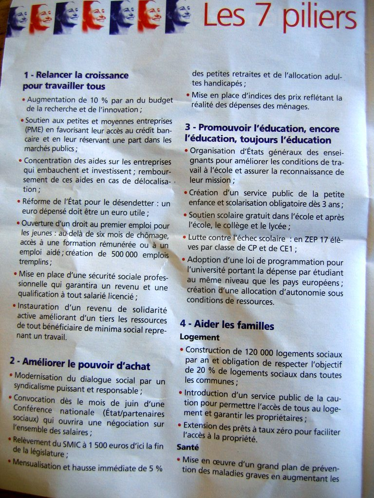
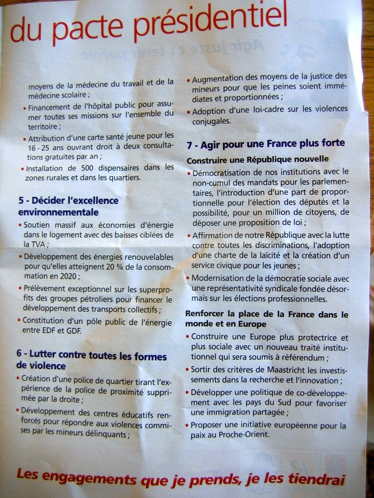
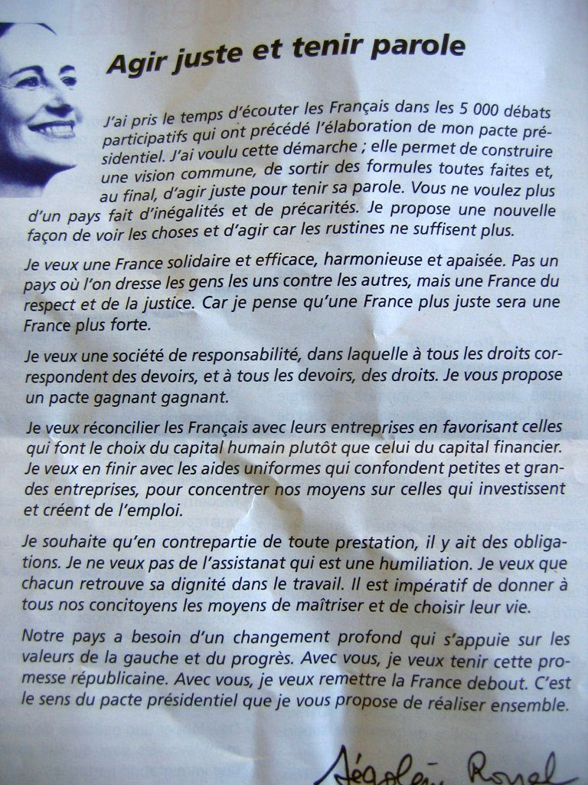

Le marché du dimanche avec la gauche
This post was originally written in French.
Mon épouse est fantastique. Non seulement elle va au marché ce matin (enfin c'était dimanche, mais le temps d'écrire le post ) pour chercher un poulet roti, mais en plus elle prend Manon avec elle pour que je puisse bosser, et en plus elle me ramène un tract de Ségolène "Miss sourire figé". Elle me le donne avec un grand sourire, celui-là aussi un peu narquois ...

Donc, je le lis avec attention et voilà ce que j'en tire.
Sur la relance de la croissance: il y a de bonnes choses, mais à nouveau, et c'est ce reproche typique que j'ai par rapport à la gauche que ce soit en Belgique ou en France, ce sont ces "aides". Je ne parle pas des aides sociales, mais des aides économiques. Deuxième point, on réserve une part des marchés publics aux PME. Argh. Vous connaissez mon avis (cfr. Mais pourquoi un Small Business Act à l’Européenne?). Encore une béquille pour aider à survire et non une véritable politique entrepreneuriale.
Amélioration du pouvoir d'achat: premier point, Syndicalisme puissant et responsable, là Madame Royale, faut aller faire un tour en Belgique. Ce n'est pas loin, et le taux de syndicalisation y est de 55 à 65%, avec des patrons, ah non pardon, des représentants syndicaux, puissants. Un bel exemple à ne pas suivre d'après moi. Dans les pays nordiques, le taux est encore plus élevé, et tout va mieux. Pourquoi?
troisième point: le fameux SMIC à 1500 EUR, qui fait rire la droite, le centre et même OB de l'extrême gauche. Une mesure qui n'en est pas une étant donné l'inflation qui amènera le SMIC à 1500 EUR dans le quasi même temps. Une mesure d'autant plus démago donc. C'est bien le propre des (de tous les) candidats, leurs mesures les plus médiatiques sont aussi les plus démagos et souvent les plus stupides.
Promouvoir l'éducation: Je trouve les points censés et intéressants, mais parfois un peu "général". Je suis étonné qu'on ne se rende pas compte (et c'est dans tous les camps) que l'environnement hypra-compétitif de l'enseignement français a une tendance malsain. L'élitisme est poussé depuis jeune, trop jeune. J'en reparlerai un de ces quatres, dans un autre post.

Décider de l'excellence environnementale: excelllent! Prélèvement exceptionnel sur les superprofits des groupes pétroliers. Est-ce vraiment une poltique environnementale? Je n'arrive d'ailleurs même pas à comprendre la phrase. Superprofits? On comprend le sens mais c'est défini comment? Prélèvements exceptionnels, ca veut dire qu'on le fera une fois, deux fois? Ne vaut-il pas mieux agir avec les groupes pétroliers que contre eux? Essayer de tirer d'un coté ne va-t-il pas les pousser à partir plus vite de l'autre?
Mais ce qui m'a le plus étonné c'est ceci ...

"à tous les droits correspondent des devoirs". On dirait le terrain de Nicolas Sarkozy ca non?
"Je ne veux pas de l'assistanat qui est une humiliation", une nouvelle fois, sur un terrain proche de Sarkozy, et un peu en opposition avec des idées présentées plus haut. Mais soit, finalement tant mieux. Avec Ségo qui va à droite et Nico qui va à gauche, et Bayrou qui monte au milieu, tout le monde va se retrouver avec les mêmes concepts, au centre, avec 25% au premier tour?
Patrice.
Comments 2
denis, 2007-03-13 11:12
Je ne suis pas français, pas anti-Ségolène (ni spécialement anti-Sarkozy d'ailleurs), mais il y a des choses qui me font réagir dans ce programme, comme c'est toujours le cas dans tous les programmes politiques Comme d'habitude il y a beaucoup de lieux communs, des contradictions et surtout, surtout, comme dans tous les programmes politiques, une accumulation de démagogie proprement effrayante. Sans compte l'éternel mauvais procès fait à l'europe. Je commence par ce qui m'a choqué le plus "Mise en place d'indices des prix reflétant la réalité des dépenses des ménages". Je ne sais pas comment est calculé l'indice des prix en France, mais en Belgique les gens ont exactement la même impression (que depuis le passage à l'euro les prix augmentent plus que l'indice). Or, toutes les études chiffrées le prouvent, sans exception, l'indice des prix reflète fidèlement l'évolution des prix à la consommation et l'euro n'a pas provoqué une hausse des prix généralisée !! Je ne vais pas parler ici des raisons pour lesquelles les gens ont l'impression que les prix augement plus rapidement que dans la réalité (sinon je vais faire encore bcp plus long), mais c'est une croyance communément partagée qui est complètement fausse (je viens de lire Freakonomics, que je conseille en passant, qui explique justement pourquoi la plupart des croyances communément partagées sur les gens sont, en réalité, fausses). C'est un fait. Ce n'est pas contestable. Et le nier n'y changera rien (à ce compte là on peut aussi croire que la terre n'est pas ronde parce qu'on ne l'a pas vue soi-même ou rester persuadé qu'il y avait des armes de destruction massive en Irak). Le programme de Ségolène Royal est donc dangereux sur ce point. Pourquoi ? Parce qu'il confirme une croyance, fausse, mais communément admise par les gens. Résultat ? La seule manière de s'en sortir serait d'adopter un indice des prix qui... ne reflète plus la réalité de l'augmentation des prix, mais l'exagère (sinon les gens penseront qu'on les a pris pour des billes...) ! D'où des hausses de salaires en cascade, qui provoqueront elles-même plus de hausses de prix, etc. Bravo la démagogie à effet boomerang ! Question lieux communs, la première page du programme n'en manque pas. "Lutter contre l'échec scolaire". Y a-t-il vraiment des politiciens qui luttent pour ? "Moderniser la sécurité sociale" "organiser des états généraux de l'enseignement" "1 euro dépensé doit être un euro utile". C'est formidable. A chaque élection, les hommes (et les femmes) politiques semblent découvrir que l'état était jusque là mal géré (par qui on se le demande ?), mais que désormais les choses vont changer. C'est bizarre, pourquoi est-ce que je ne me sens pas convaincu ? Ce sont au mieux des promesses creuses. De toute façon, quel politicien irait mettre dans son programme qu'il faut "laisser la sécurité sociale comme ça" et que "c'est pas grave si dans le buget de l'état il ya un peu d'argent qui se perd"... En ce qui concerne les contradictions, on relève qu'il faut "désendetter l'état" (en page 1), mais qu'il faut "sortir des critères de Maastricht les investissements en R&D". En clair, donc, l'état doit se désendetter, mais il doit en même temps avoir le droit de s'endetter plus pour financer les investissements en R&D, sans respecter les critères de Maastricht. Comprenne la logique qui pourra... Et puis l'Europe. "Il faut construire une europe plus sociale". C'est incroyable la schizophrénie des états quand on parle de l'europe. L'europe est en général responsable de tout ce qui se passe mal dans tous les pays européens. En résumé, le sentiment qu'on propage dans l'opinon publique c'est que, quand l'europe fait quelque chose, c'est négatif, et quand elle ne fait pas quelque chose, c'est négatif aussi... Bref, l'union européenne est une institution si nuisible qu'on se demande pourquoi les états ne se mettent pas d'accord pour la supprimer... Les états oublient (ou font semblant d'oublier plutôt) que l'europe n'a que les compétences qu'ils veulent bien leur donner. Si l'europe n'est qu'économique, comme on l'entend généralement, c'est uniquement parce que les compétences économiques sont à peu près les seules dont les états européens ont bien voulu la doter. Alors, dire qu'il faut une europe plus sociale, c'est bien, c'est très bien même, mais ça veut dire que : 1. il va falloir que tous les états acceptent de se décharger de certaines compétences au profit de l'europe (ce qui n'est pas gagné, encore moins depuis qu'on a élargi à tout va sans réformer les institutions) et que : 2.une fois ceci fait, il faudra pouvoir accepter sans rechigner que l'europe exerce ses compétences. Or, on voit bien que, quand il s'agit de décider, par exemple, d'élargir les domaines ou les états décident à la majorité (et plus à l'unanimité), d'élargir les compétences du parlement européen ou, plus simplement, de prendre des décisions concrètes, tous les états se remettent rapidement à défendre leur pré carré (exemples récents : la France et la politique agricole européenne, la France et l'Espagne en matière de quotas de pêche, l'Allemagne -qui pourtant est un des pays les plus en pointe dans le domaine de l'environnement- en matière de réductions des émissions de CO2 par les voitures). Pourtant, accepter l'europe devra inévitablement passer par le fait d'accepter de renoncer à ses prérogatives nationales et accepter que des décisions impopulaires dans un état puissent lui être imposées par une majorité d'autres états. Si on veut vraiment avoir la chance de développer une europe sociale, c'est ce discours qu'il faut avoir le courage de tenir. Je pourrais encore dire bien d'autres choses, mais je m'arrête là. Encore une fois, je le répète, je n'ai aucun intérêt, ni a priori dans la campagne présidentielle française (je ne suis d'ailleurs pas français). Mais ça prouve encore une fois que, quand on regarde un programme politique il faut savoir lire entre les lignes...et puis se rappeler que les promesses n'engagent que ceux qui les croient (comme disait je ne sais plus quel homme politique français justement).
Arnaud, 2007-03-14 00:51
L'homme politique en question : Jacques Chirac ? De toute manière, on peut bien élire n'importe qui en 1995, Chirac est passé avec un programme de gauche, plus rien ne m'etonne plus depuis